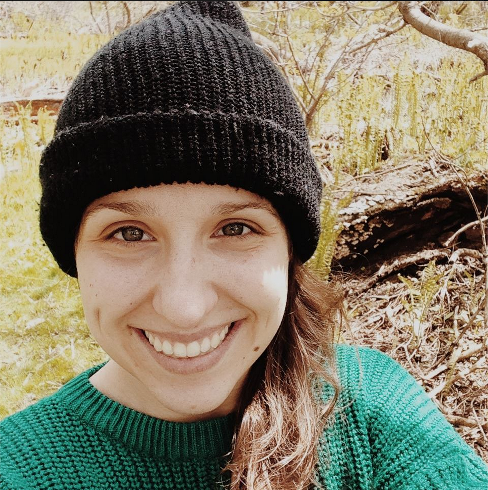

Ma page personnelle
Insérer texte
Le programme offre une formation professionnelle et multidisciplinaire en aménagement du territoire et en urbanisme. Pendant trois ans, l'étudiant y apprend à comprendre les milieux urbains, à diagnostiquer les problèmes des villes, à apporter des solutions pratiques sous la forme de schémas d'aménagement, de plans et de règlements d'urbanisme, à concevoir des processus de concertation avec les citoyens, à élaborer des concepts de design urbain, à évaluer des politiques et des projets de développement et à préparer des règlements de contrôle de l'utilisation du sol.
Le projet Manawan sans réserve a été mené dans le cadre du projet final au baccalauréat en urbanisme de l'UQAM. Il s'agissait de repenser le centre de la réserve atikamekw de Manawan dans Lanaudière. Nous avons ainsi mené des ateliers avec les jeunes de la communauté et rencontré à plusieurs reprises les membres du Conseil de bande. Le tout s'est terminé par une présentation finale devant public et jury ainsi que l'animation d'un kiosque d'information.